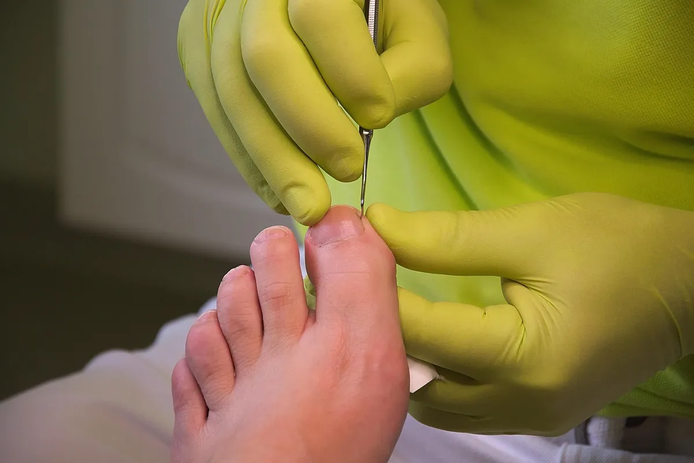

¿Cómo reconocer cambios en una uña?
Detectar a tiempo las alteraciones en las uñas permite orientar mejor el manejo de cada caso.
Las uñas cumplen una función protectora y su aspecto puede reflejar cambios que vale la pena observar. Uno de los primeros signos suele ser el cambio de color: tonos amarillentos, blanquecinos o marrones que no desaparecen con el aseo habitual. También puede aparecer un engrosamiento progresivo que dificulta el corte, o una fragilidad que hace que la uña se quiebre con facilidad.
Otros cambios frecuentes incluyen la separación parcial de la uña del lecho ungueal, la aparición de estrías o rugosidades en la superficie, y alteraciones en la dirección del crecimiento. Estos signos no son exclusivos de una sola causa: pueden estar asociados a hongos, a traumatismos repetidos, a problemas circulatorios o a otras condiciones que conviene evaluar.
La recomendación general es no intentar autodiagnosticarse ni aplicar productos sin orientación. Una evaluación podológica permite valorar el estado de la uña, identificar posibles factores asociados y definir el manejo más adecuado. Ante cualquier cambio persistente, lo más prudente es consultar a un profesional.